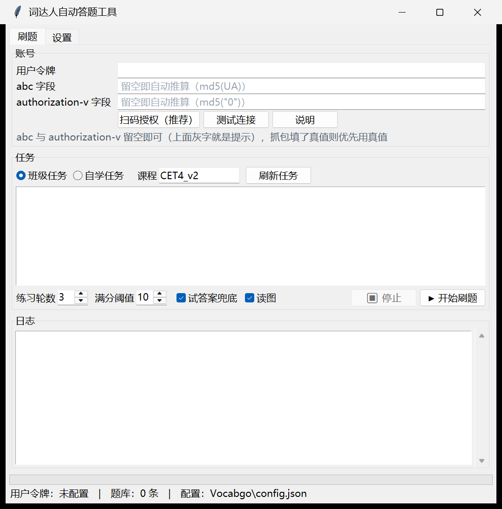
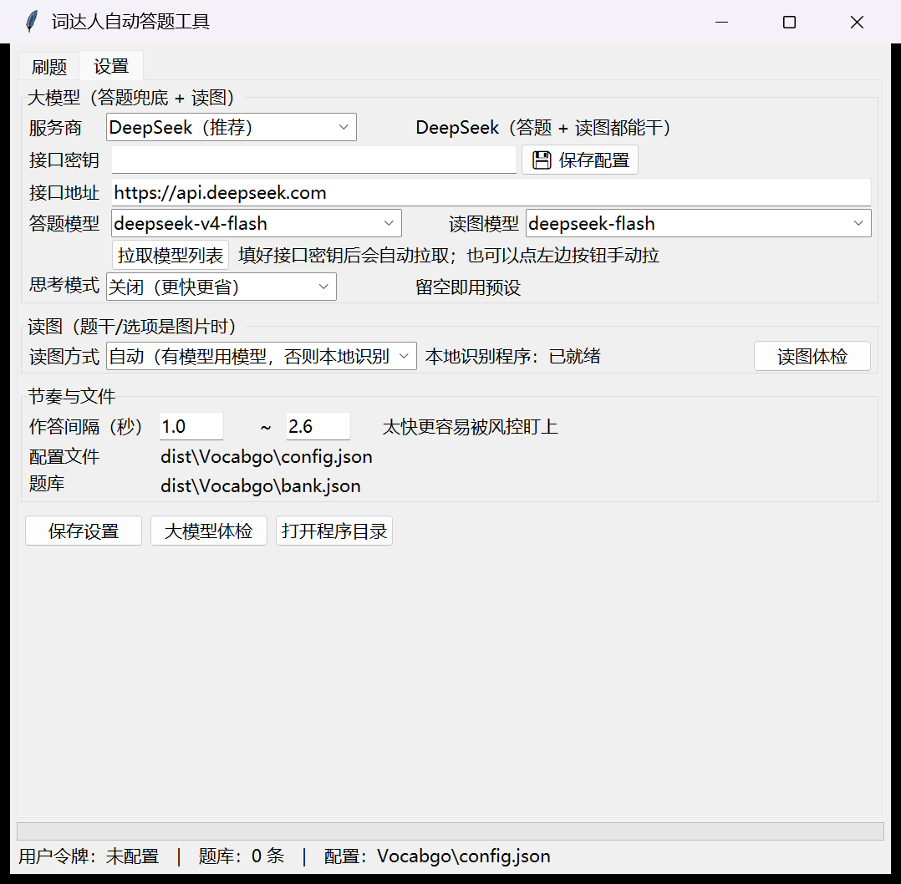

微信「词达人」（vocabgo / 外教社学生端）班级任务 + 自学任务自动作答
一个把「词达人」里重复的单词练习自动做完的小工具。你只需要在第一次使用时做两件事：填一个大模型密钥、用微信扫一下码。之后每次打开就能直接开刷。
Vocabgo.exe。首次启动 Windows 可能弹「已保护你的电脑」，点「更多信息」→「仍要运行」。
Vocabgo.exe，点「刷新任务」→「开始刷题」即可。密钥、地址、模型、节奏、上次刷的任务都会自动带出来。
程序里点「⭐ 一键填入推荐配置」就是下面这套值。它针对「稳定拿高分、又不显得像机器」这一目标调的：
| 项目 | 推荐值 | 为什么这么设 |
|---|---|---|
| 服务商 | DeepSeek | 答题兜底 + 读图一把 key 搞定，价格低 |
| 答题模型 | deepseek-v4-flash | 从选项里挑答案这种短任务，够用、快、便宜 |
| 读图模型 | deepseek-flash | 支持图片输入，题干万一变成图片也能认出来 |
| 思考模式 | 关闭 | 每题都推理会又慢又贵，短答提取不需要 |
| 作答间隔 | 1.5 ~ 3.5 秒 | 比默认再慢一点，更像人在做题，降低被风控关注 |
| 试答案兜底 | 开启 | 生词也能先判对再提交，分数不会掉 |
| 读图 | 开启（自动） | 有模型时用模型，没有就退回本地识别，不影响流程 |
| 练习轮数 | 3 | 自动重练没满分的词，把分追满 |
| 满分阈值 | 10 | 10 分制下的满分线 |
程序目录里另外附了一份 config.推荐.json，内容与上面一致。如果你想手动替换配置，把它改名为 config.json 覆盖即可（记得重新填密钥和令牌）。
免安装版（推荐）：解压后双击 Vocabgo.exe。整个文件夹可以放在桌面或 D 盘任意位置，也可以拷到 U 盘带走。
源码运行（进阶）：需要 Python 3.10+，在项目目录执行：
pip install -r requirements.txt
python vocabgo_app.py令牌（usertoken）是程序代表你操作账号的凭据，必须由你本人产生。三种方式，优先用第一种：
如果你手上只有「用户ID」（不是用户名），用登录对话框里的「方式二」：
命令行等价用法：
python -m vocabgo captcha # 取一张验证码，存成 验证码.png（同时打印 req_no）
python -m vocabgo login --id 你的ID --password 你的密码 --valid-code 图上的字符 --req-no 上一步的req_nopip install mitmproxy
mitmdump -s tools/mitm_capture.py然后让电脑上的微信走 127.0.0.1:8080 代理，打开「词达人」公众号 → 学生端，随便点进一个任务页面。插件会自动把三个字段写进配置文件：
| 字段 | 是什么 |
|---|---|
usertoken | 用户令牌，代表你账号的凭据。必须由你本人产生 |
abc | 平台的一道反爬校验，值 = md5(客户端 User-Agent)。留空即可，程序会自己算 |
authorization-v | 同类的版本标记，值是固定的 md5("0")。留空即可 |
界面上的「abc 字段」「authorization-v 字段」就是后两个。它们留空也能跑：程序按当前 UA 自动推算，抓包填了真值则优先用真值。
📋 可用模型 3 个：deepseek-v4-flash, deepseek-v4-pro, deepseek-flash
💬 对话测试：✅ 模型回了 'OK'
🖼️ 读图测试：✅ 识别为 'abandon'config.json 里，明文。别把这个文件发到群里，也别把整个文件夹连密钥一起分享给别人 —— 发之前先把密钥删掉。
切到「刷题」页：

刷题页：上半部分是账号与任务，下半部分是实时日志
CET4_v2）日志里每行末尾的方括号就是这道题的命中来源：
| 标记 | 含义 | 风险 |
|---|---|---|
[题库] | 以前答过，直接命中本地题库 | 最低 |
[规则] | 用「单词记忆」题学到的词义表直接选中正确释义 | 很低 |
[试答案] | 先故意答错，从服务端返回里套出正确答案，再用正确答案重判一次 | 中（会留下错误作答轨迹） |
[大模型] | 交给 DeepSeek 判断 | 很低 |
[猜测] | 实在没辙盲选（正常应该看不到） | 高 |
一趟刷完会打印统计，例如：
🎉 结束：120/120 进度 120/120 | 题库 96 | 规则 18 | 试答案 6 | LLM 0 | 猜测 0 | 服务端纠错 0「题库」越大、「试答案」越小，说明你账号上的作答轨迹越干净。想更干净：配好大模型后，取消勾选「试答案兜底」。
bank.json；它是纯文本，可以用记事本看| 控件 | 作用 |
|---|---|
| 用户令牌 | 账号凭据，登录或抓包后自动填入，也可手动粘贴 |
| abc 字段 / authorization-v 字段 | 平台的接口校验字段。留空即自动推算（abc = md5(UA)，authorization-v = md5("0")）；抓包填了真值则优先用真值 |
| 登录获取令牌 | 用词达人账号密码登录（或用「用户ID + 图形验证码」），令牌自动写入配置 |
| 测试连接 | 检查令牌是否还有效（失效了就重新登录） |
| 说明 | 弹出三种获取令牌的方式 |
| 班级任务 / 自学任务 | 切换任务类型；自学任务需要旁边填课程代码 |
| 刷新任务 | 从服务器拉取当前可做的任务列表 |
| 练习轮数 | 刷几轮（追满分用，默认 3） |
| 满分阈值 | 低于该分数的词才重练（默认 10） |
| 试答案兜底 | 开启时生词靠「先错两次套答案」拿分；关掉则更依赖大模型 |
| 读图 | 题干/选项是图片时自动识别成文字 |
| ▶ 开始刷题 / ⏹ 停止 | 开始与安全停止（当前题收尾后停） |
| 日志区 | 实时输出，出问题时可整段复制给别人看 |

设置页：服务商、地址、模型、密钥、读图方式、作答节奏
| 控件 | 作用 |
|---|---|
| 服务商 | DeepSeek / OpenAI / 本地 Ollama / 自定义，切换会自动带出地址与模型名 |
| 接口密钥 | 粘贴你的 key，右边「💾 保存配置」立即落盘 |
| 接口地址 | 自动填好，走中转站时手改 |
| 答题模型 / 读图模型 | 下拉可选，会从接口自动拉取 |
| 拉取模型列表 | 手动拉一次可用模型（填完密钥也会自动拉） |
| 思考模式 | 建议「关闭」：短答任务开思考又慢又贵 |
| 读图方式 | 自动 / 大模型 / 本地识别 / 百度 / 关闭；右边会显示本地识别程序是否就绪 |
| 读图体检 | 生成一张测试图真跑一遍识别 |
| 作答间隔 | 每题的随机等待范围，推荐 1.5 ~ 3.5 秒 |
| 代理 | 留空 = 直连（推荐）。程序默认忽略系统/环境代理；确实要走代理才填地址，或勾选「跟随系统代理」 |
| ⭐ 一键填入推荐配置 | 把第 3 章那套值一次填好（不动你的密钥和令牌） |
| 大模型体检 | 测试：模型列表 / 对话 / 读图 三项 |
| 打开程序目录 | 打开软件所在文件夹，方便找 config.json |
config.json；关闭窗口时还会再存一次。所以下次打开不用重新配。
每道题按下面的顺序尝试，命中就停：
读图 → 题库 → 规则匹配 → 试答案 → 大模型 → 盲选| 环节 | 做什么 |
|---|---|
| 读图 | 题干/选项以图片下发时，先识别成文字（题目正常情况下是纯文本，这一步一般用不到） |
| 题库 | 题目指纹命中本地缓存，直接给出上次的正确答案 |
| 规则匹配 | 「单词记忆」题型本身会给出单词的全部释义，程序顺手记下，后面的选择题直接查表；搭配题里服务端把答案词放在备注里，也能直接取 |
| 试答案 | 连续提交两次错误答案后，服务端会回吐本题正确答案；拿到后再用正确答案重新判一次，所以最终记录的仍是正确作答 |
| 大模型 | 把题干和选项交给模型判断（一词多义、短语排序这类题最有用） |
答过的题会写回 bank.json，所以同一套词练第二遍几乎全是「题库」命中，又快又干净。
最常见的原因是你在手机或别的电脑上登录了词达人，令牌被刷新了。重新点「登录获取令牌」即可。
用户名/密码不对。注意：「用户名」通常是注册时的手机号或学号，不是昵称。忘了密码就先用微信在官网登录，进去后在个人设置里改一个密码；或者直接改用抓包方式。
密钥不对或余额用完了。到服务商控制台检查密钥、充值，然后点「大模型体检」复验。
不影响使用 —— 只是该服务商没提供模型列表接口。手动把模型名填进「答题模型」即可（DeepSeek 填 deepseek-v4-flash）。
把「练习轮数」调到 3~5、「满分阈值」保持 10，程序会自动重练未满分的词。
极少数题型服务端不给答案。这一题会被记为错，下一轮重练会再试一次。如果频繁出现，把日志整段发给作者。
可能原因：令牌失效；老师还没发布任务；任务已全部完成（把「任务筛选」理解为「全部」）。
自学任务第一次选词偶发报错是平台侧的老现象，再点一次「开始刷题」通常就好。
不用。把整个文件夹拷过去，配置与题库都在里面。只有令牌可能因为异地登录失效，重新登录即可。
见下一章。简单说：按推荐节奏、别多设备乱登录、别一口气刷完整个自学任务，风险可控但不为零。
平台的接口校验字段，值 = md5(你的客户端 User-Agent)；旁边的 authorization-v 是同类标记，值固定为 md5("0")。两个都可以留空 —— 程序会自己推算。抓包填了真值就优先用真值。
这是电脑上的代理在作怪，不是软件坏了。很多人的机器上装过 Clash / V2Ray，系统里留着代理设置（常见的是 127.0.0.1:7890）。代理程序一关，所有联网请求就会失败。
本程序默认直连（会主动忽略系统代理），所以正常情况下不受影响。如果还是报这类错：
http://127.0.0.1:7890先确认网络本身正常（浏览器能打开网页）。如果开了 VPN / 加速器，关掉再试 —— 词达人是国内服务，走代理反而更慢更不稳。
早期版本用微信扫码授权，那条链路走的是第三方授权接口，平台已经改了：实测扫码后服务端返回「微信认证失败」（新版客户端登录改成握手 + 公钥加密传输）。所以现在改成账号密码登录，接口更简单也更稳。实在登录不了就用抓包。
code=11003 需安全验证表示这次请求没有带上有效的用户令牌（要么没登录、要么令牌已失效）。重新「登录获取令牌」或点「测试连接」确认。
| 事项 | 建议 |
|---|---|
| 作答节奏 | 保持 1.5 ~ 3.5 秒。别为了快而改成 0（界面里没有这个选项，改配置文件也别设 0） |
| 多设备登录 | 刷题期间不要在手机/其它电脑登录词达人，令牌会被挤掉 |
| 刷题量 | 不要一次性刷完整个自学任务，分几次、隔一段时间更稳妥 |
| 试答案 | 会让服务端看到「错两次再对」的轨迹。题库越大它越少；配好大模型后可关掉 |
| 运行环境 | 用正常电脑/微信客户端。模拟器、Xposed 之类的环境风险明显更高 |
| 接口变更 | 平台改接口时工具会失效。表现为报错或大批量「猜测」，此时先看程序目录有没有新版本 |
| 密钥保管 | config.json 里有明文密钥，别直接分享整个文件夹 |
所有数据都在程序目录，不写注册表、不装服务：
| 文件 / 目录 | 说明 |
|---|---|
Vocabgo.exe | 主程序，双击运行 |
_internal\ | 运行库，不要删也不要单独移动 |
config.json | 你的全部配置（令牌、密钥、节奏） |
bank.json | 本地题库，越用越大，可随时删（删了不影响使用，只是重新积累） |
验证码.png | 用命令行取图形验证码时生成的临时图片，可删 |
说明书.html | 就是本文档 |
selftest.txt | 环境自检报告，排查问题时有用 |
卸载：直接删除整个文件夹即可，没有残留。想保留题库就先把 bank.json 复制出来。
config.json）{
"auth": {
"usertoken": "", // 用户令牌（登录或抓包自动填）
"abc": "", // 鉴权字段，抓包自动填
"authorization_v": "" // 鉴权字段，抓包自动填
},
"llm": {
"provider": "deepseek", // 服务商：deepseek / openai / ollama / custom
"url": "https://api.deepseek.com", // 接口地址，选服务商自动带出
"key": "", // ← 只需要填这个
"model": "deepseek-v4-flash", // 答题模型
"vision_model": "deepseek-flash", // 读图模型
"thinking": "off" // auto / off / on，短答任务建议 off
},
"vision": {
"backend": "auto", // auto / llm / tesseract / baidu / none
"tesseract_cmd": "" // 留空自动查找本地识别程序
},
"study": {
"course_id": "CET4_v2", // 自学任务课程代码
"grade": 2
},
"runtime": {
"pace": [1.5, 3.5], // 每题随机等待（秒）
"probe": true, // 试答案兜底
"ocr": true, // 读图
"max_score": 10, // 满分阈值
"loop": 3, // 练习轮数
"kind": "class", // 上次的任务类型
"last_task_id": "", // 上次刷的任务，下次自动选中
"bank_path": "" // 题库文件，留空 = 程序目录 bank.json
},
"network": {
"proxy": "", // 留空 = 直连（推荐）；要走代理才填，如 http://127.0.0.1:7890
"use_system_proxy": false // 勾上才去读系统 / 环境变量里的代理
}
}发布包里另有一个命令行版本 VocabgoCLI.exe（需要单独下载或从源码运行 python -m vocabgo）：
python -m vocabgo config --recommend # 写入推荐配置
python -m vocabgo check # 检查令牌
python -m vocabgo tasks --kind class # 列出班级任务
python -m vocabgo run --kind class --index 0 --loop 3
python -m vocabgo llm --image # 大模型体检（含读图测试）
python -m vocabgo vision --test # 读图能力体检
python -m vocabgo run --kind study --course CET4_v2 --index 0常用开关：--fast（去掉等待，仅供调试）、--no-probe（关掉试答案）、
--no-ocr（关掉读图）、--debug（打印每次请求与响应）、--bank 路径（指定题库文件）。